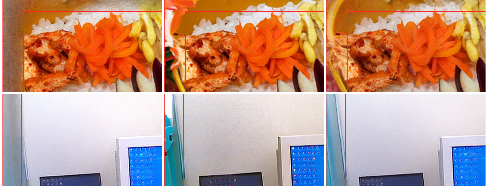
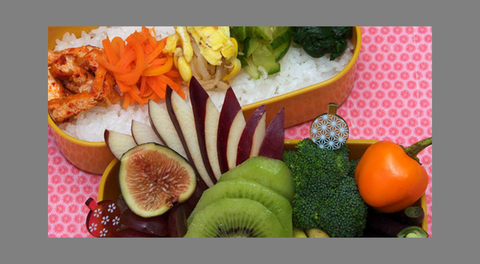
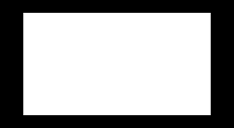
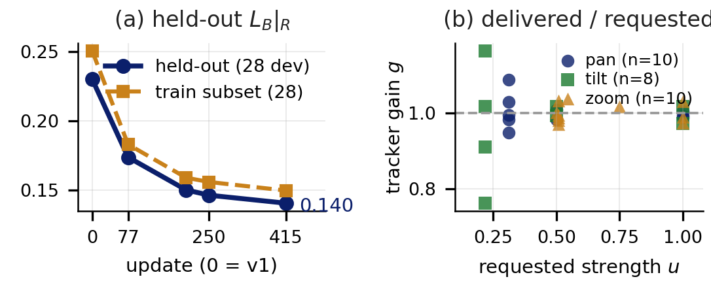

Our v1 camera adapter for the frozen Wan2.2 image-to-video model left gray bands in newly revealed borders and had no calibrated strength control. v2 fixes both with a replicate-padded guide, a hybrid flow-matching loss and an isotonic strength map. Held-out revealed-region loss falls from 0.230 to 0.140.

Figure 1: Revealed border at frame 120 (red line: edge of the revealed region). v1: gray band; replicate fill alone: extruded fragments; v2: the scene continues.
Our major contributions:
Figure 2: Workflow from the Submission 1 review to the deployed notebook.

v1: zero fill
validity V + displacementFigure 3: Guide (v1 against v2), adapter placement and the two loss passes (loss weights shown as images, white = high).
| v1 | v2 (this work) | |
|---|---|---|
| Sources | 36 COCO photos | 636 COCO 2017 [3] (608 train, 28 dev) |
| Clips | 108 | 1,908 (static + moving), about 20 GB |
| Motion | zoom ×1.12 only | 6 directions, up to 8° or ×1.25, strength 0.15 to 1 |
| Format | 1280 x 704, 121 frames, 24 fps; one neutral caption; per-source overscan | |
Table 1: Dataset characteristics.
| Task (plan of Submission 1) | Status and result |
|---|---|
| Strength calibration | done: pooled gain 0.96 to 1.02 |
| Border objective | done: held-out LB|R 0.230 → 0.140 |
| Six directions | done: gain 0.95 to 1.17 |
| Loss ablations (A only, B only) | partly: fill ladder only |
| Bends, speed changes | not done |
Table 2: Tasks attempted for novelty assessment. Diagnosis: the zero-filled guide is confirmed as the cause of the gray.
Qualitative: Figure 1. Quantitative, v1 against v2:
| Metric (lower loss or score is better) | v1 | v1 + rep. | v2 |
|---|---|---|---|
| Held-out LB|R (28 sources) | 0.230* | n/a | 0.140 |
| Border score, food | 0.554 | 0.246 | 0.199 |
| Border score, computers | 2.135 | 2.069 | 1.757 |
| Tracker gain, 4 cases (ideal 1) | 0.92 to 1.25 | 0.96 to 1.34 | 0.95 to 1.17 |
| Reveal LPIPS [5], 7 pairs | not run | not run | 0.276 |
Table 3: *v1 adapter under the v2 loss (warm start). Border score: reference-free, a failure detector only.

Figure 4: (a) held-out and train-subset loss; (b) delivered over requested motion, 28 videos.
[1] Team Wan, Ang Wang, Baole Ai, Bin Wen et al. (62 authors). Wan: Open and Advanced Large-Scale Video Generative Models, arXiv, 2025. https://arxiv.org/abs/2503.20314
[2] Edward J. Hu, Yelong Shen, Phillip Wallis, Zeyuan Allen-Zhu, Yuanzhi Li, Shean Wang, Lu Wang and Weizhu Chen. LoRA: Low-Rank Adaptation of Large Language Models, ICLR, 2022. https://arxiv.org/abs/2106.09685
[3] Tsung-Yi Lin, Michael Maire, Serge Belongie, James Hays, Pietro Perona, Deva Ramanan, Piotr Dollar and C. Lawrence Zitnick. Microsoft COCO: Common Objects in Context, ECCV, 2014. https://arxiv.org/abs/1405.0312
[4] Yaron Lipman, Ricky T. Q. Chen, Heli Ben-Hamu, Maximilian Nickel and Matt Le. Flow Matching for Generative Modeling, ICLR, 2023. https://arxiv.org/abs/2210.02747
[5] Richard Zhang, Phillip Isola, Alexei A. Efros, Eli Shechtman and Oliver Wang. The Unreasonable Effectiveness of Deep Features as a Perceptual Metric, CVPR, 2018. https://arxiv.org/abs/1801.03924
[6] Richard E. Barlow, D. J. Bartholomew, J. M. Bremner and H. D. Brunk. Statistical Inference under Order Restrictions, Wiley, 1972.
We thank the IE 643 instructors for the review that identified the two gaps. GPU runs used Molab sandboxes.